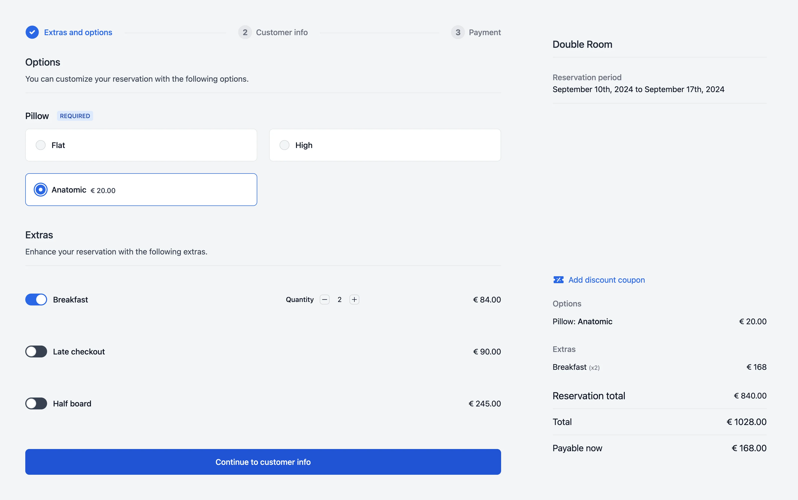
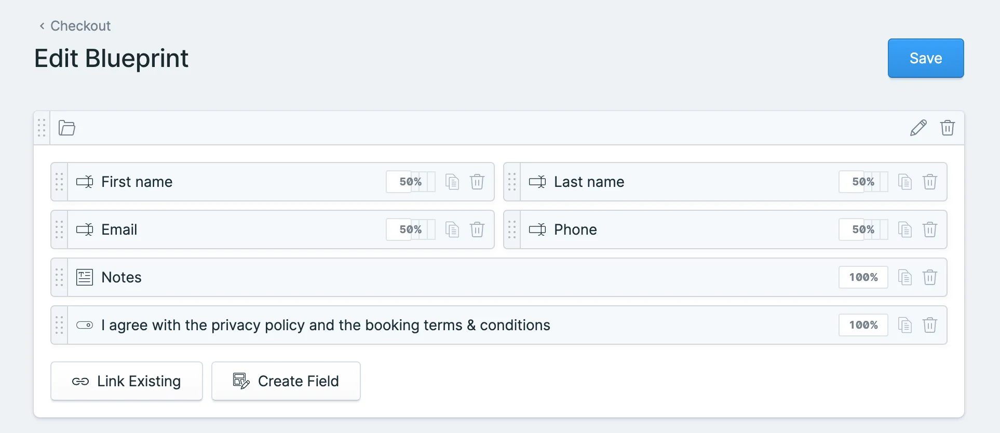
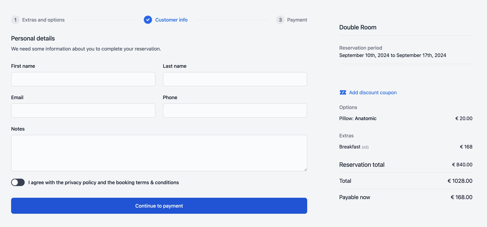

Checkout
The Checkout component handles the whole checkout process: it allows the user to select extras or options, lets them add a coupon for a discount, gets the user's personal details, and handles the payment.
In v6 the checkout supports multiple payment gateways. When more than one gateway is enabled, the user is shown a payment-method picker before paying; with a single gateway it is auto-selected, and when the price is zero the payment step is skipped entirely.
In this page, we'll go over the setup required for the Checkout component to function correctly and how to customize it to fit your needs.
Component basics
Before using this component, let's go through the required steps to get it working:
- You need to create an Entry that will be used as the checkout page. This Entry can follow your website's design but must have a different template that will include the
Checkoutcomponent. - You also need to create a "Checkout complete" page. Again, this page can be like any page on your site, but in its template, you must include the
resrv_checkout_redirecttag. - You need to create the checkout form. If you used the installer, a sample checkout form is already published for you to edit.
- You must configure and enable at least one payment gateway in order to accept payments. See the Payment gateways overview, plus the Stripe and Mollie pages.
Checkout Component
To load the Checkout component, first create a new Entry in your default collection (for example "Pages"). Create a custom template for this page and include the Checkout component:
{{ livewire:checkout }}As simple as that! The component has a few properties that you can set to customize it to your needs:
| Property | Type | Default | Description |
|---|---|---|---|
| enableExtrasStep | boolean | true | By default the component starts with a step that allows the user to select Extras / Options. If you don't use them, you can disable it by setting this to false and the step is skipped. |
| enableCoupon | boolean | true | By default the component allows the user to add a discount coupon, you can disable this here if you don't use them. In v6 this is locked: it is set once when the component mounts and can no longer be toggled client-side. |
| view | string | "checkout" | You can override the view that is used to render the component. Expects a name.blade.php file in the /resources/views/vendor/statamic-resrv/livewire folder. |
You set these as attributes on the tag (note the snake_case casing):
{{ livewire:checkout enable_extras_step="false" enable_coupon="false" view="my-checkout" }}
Checkout steps
The checkout is organized into three internal steps:
- Extras & options: The user picks any Extras and Options for the reservation. This step is skipped when
enableExtrasStepisfalse(any extras or options already stored in the session are still applied). - Personal details: The user fills in the checkout form with their details. The submit button reads "Continue to payment", or "Confirm reservation" when the amount due is zero.
- Payment: What renders here depends on how many gateways are available:
- More than one gateway → a payment-method picker is shown first (see below).
- Exactly one gateway → it is auto-selected and the payment view is shown directly.
- Zero price → the whole payment step is skipped and the reservation is confirmed (see Skip Payment).
The step indicator adjusts automatically: the Extras & options row is hidden when enableExtrasStep is false, and the Payment row is hidden entirely for zero-price reservations.
Selecting a payment method
When more than one payment gateway is enabled and survives the amount filtering for the reservation total, the user is shown a Select payment method picker before they pay. Each option displays the gateway label, and if a surcharge is configured for that gateway, a suffix is appended:
- Percentage surcharge:
(+10% surcharge) - Fixed surcharge:
(+€ 5 surcharge)
When the user selects a gateway, the surcharge is added to the amount, a payment intent is created, and the matching payment view is rendered (or, for redirect gateways such as Mollie, the user is sent to the gateway and back).

A few behaviours to keep in mind:
- Single gateway: the picker is never shown; the only available gateway is selected automatically.
- No gateway for the amount: if no enabled gateway accepts the reservation amount (for example, every gateway has a minimum/maximum limit that excludes it), the user stays on the details step and an error is shown. Make sure your gateway amount limits cover the totals you expect.
See Payment gateways for how to enable gateways and configure surcharges and amount limits.
Offline / pay-later
Resrv ships with an Offline gateway (OfflinePaymentGateway) for bookings you collect payment for manually: bank transfer, pay on arrival, and so on. Enable it like any other gateway (see Payment gateways).
When the user reaches the offline gateway, they see the amount due and a Confirm reservation button instead of a card form. Clicking it confirms the booking server-side without taking a real payment. If more than one gateway is available, a Change payment method button lets the user go back to the picker.
Because no real payment is captured, the customer is redirected to the checkout-complete page with the pending status (see below): a message telling them the booking has been received and payment is still to be settled. The reservation itself is already confirmed server-side (availability is secured and the confirmation email is sent); you simply collect and record the payment outside Resrv.
Checkout Complete
After the checkout is complete, the user is redirected to the "Checkout complete" page. This page can be like any page of your site, but in its template you must include the resrv_checkout_redirect tag:
{{ resrv_checkout_redirect }}
<div class="w-full">
<div class="text-xl xl:text-2xl font-bold mb-3 lg:mb-4">
{{ title }}
</div>
<p class="lg:text-lg">
{{ message }}
</p>
</div>
{{ /resrv_checkout_redirect }}The tag is gateway-aware: it resolves the gateway from the current reservation (or from the resrv_gateway query parameter that redirect gateways append on the way back) and asks it how the payment went. It exposes the following variables:
| Variable | Description |
|---|---|
status | One of success, failed, or pending. |
title | A localized title for the result. |
message | A localized message for the result. |
reservation | The reservation data array. |
The three statuses are:
success: "Payment successful." The payment was processed and the reservation is confirmed.failed: "Payment failed." The payment was not successful; the customer is asked to retry or get in touch.pending: "Reservation received." The reservation has been received and held, and will be confirmed once payment is settled. This is what offline / pay-later bookings and other held bookings return.
Inside the tag you can access the reservation variable that contains the reservation data. This is the correct place to add any goal-based events, like Analytics.
Choosing the checkout form
The checkout form used at step 2 is resolved per reservation, so different collections or entries can use different forms. Resrv picks the first matching form in this precedence order:
- Entry mapping: a form mapped to that specific entry.
- Legacy
resrv_override_form: the per-entry field from v5, kept for backwards compatibility. - Collection mapping: a form mapped to the entry's collection.
- Default form: the global default checkout form.
You configure the default form and the optional collection / entry mappings in Resrv → Settings → Checkout (checkout_forms_default, checkout_forms_collections, checkout_forms_entries). Developers who prefer to keep these mappings under version control can instead set the nested checkout_forms array (default / collections / entries) in config/resrv-config.php, which takes precedence over the Control Panel keys when present.
See the Configuration page for the full list of settings.
Checkout form
We are leveraging the Statamic form builder in order to allow you to customize the checkout form. If you published it during the installation process, you will find it in your Blueprints.
ALWAYS KEEP THE EMAIL FIELD
The email field (with the handle email) is required for the checkout emails to work. Always make sure to keep it in your checkout form.
You can use Statamic's validation tab to add validation to your fields. The fields that are implemented in the frontend are:
- Text
- Radio
- Checkboxes
- Select
- Textarea
- Integer
- Toggle
- Dictionaries NEW
The dictionary Countries will display an AlpineJS filtered select box. Resrv adds the dictionary Country Phone Codes which displays a select box with all country codes plus an input box for the actual phone number.


Cancellation policy
When a rate declares a cancellation policy, a Cancellation policy label is shown in the checkout sidebar (for example "Free cancellation until Mon 03 Jun 2026" or "Non-refundable"). The label is snapshotted onto the reservation at booking time, so later changes to the rate never alter the terms an existing booking was made under.
Non-refundable bookings are always charged in full at checkout, even after a coupon is applied or removed, regardless of the global free-cancellation settings.
Required Configuration
For the checkout to work correctly, you need to select the Checkout Entry, the Checkout Complete Entry, and the default Checkout form in the addon's configuration page.
Finally, you must also set up and enable at least one payment gateway.
Skip Payment
If the price of the reservation is zero (either because you set the price to zero, or because dynamic pricing brings it to zero), the checkout is completed without any payment. The payment step is never shown, the Payment row is hidden from the step indicator, and the step-2 button reads "Confirm reservation". This means you can use only the reservation part of Resrv. For example, if you have a restaurant that takes reservations but doesn't charge for them, you can simply set the price to zero.
This is distinct from the offline / pay-later gateway (a real gateway that confirms the booking immediately but shows the customer a "payment pending" message) and from the affiliate "pay later" flow used by partners: both of those still go through step 2 with a non-zero amount.